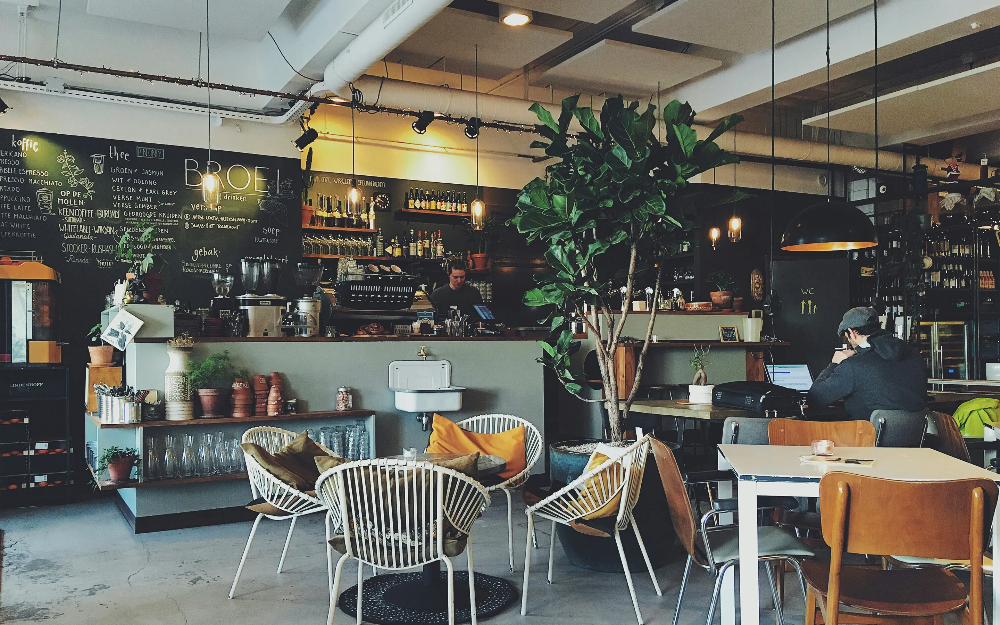
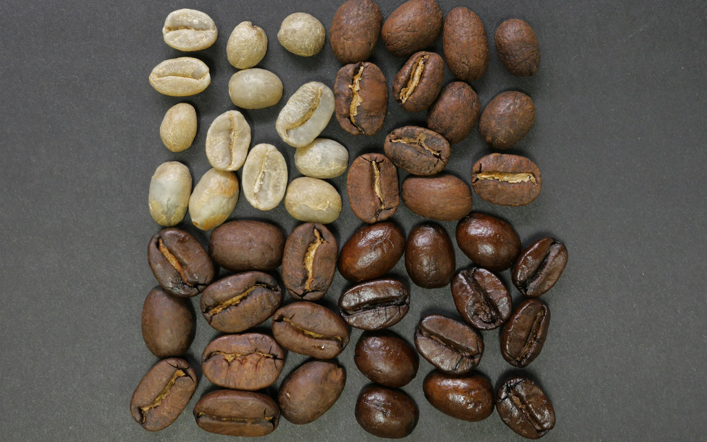
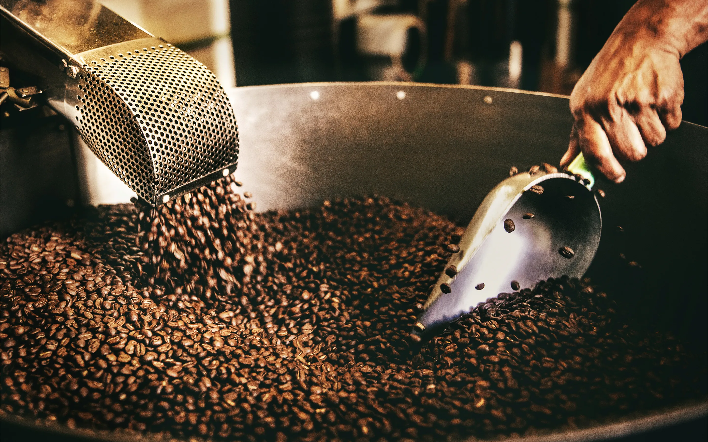
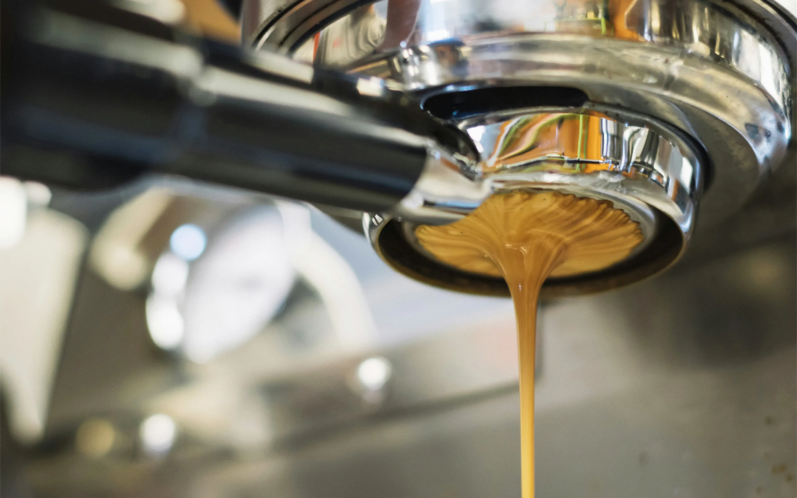

五感で味わう、
上質な一杯。
about OG cafeについて

良い豆を、適切な温度で、丁寧に淹れる。
OG cafeが大切にしているのは、
そんな当たり前の中にある本質です。
余計なものは加えず、
コーヒーが持つ本来の輝きだけを
抽出しました。
凛とした静寂の中で、深く、濃い一杯を
お楽しみください。
commitment こだわり

select
こだわりその１、 厳選した豆であること。
世界中の農園から、その年、その時期に最も状態の良いコーヒー豆のみを厳選して仕入れています。単一農園の個性を愉しむシングルオリジンから、計算し尽くされたバランスのブレンドまで。豆が持つ本来のポテンシャルを信じ、妥協のない選別を行っています。

roast
こだわりその２、 最適な焙煎をすること。
コーヒーの味を左右する焙煎。OG cafeでは店内のロースターを使用し、その日の気温や湿度に合わせて火力を微調整しながら、毎日少量ずつ小規模焙煎を行っています。浅煎りの華やかな酸味から、深煎りの芳醇な苦味まで。一番美味しい飲み頃の状態でお客様にお届けします。

brew
こだわりその３、 最高を追求すること。
その日の豆の状態、挽き具合に合わせて、熟練のスタッフが一杯ずつ丁寧にハンドドリップで抽出します。お湯の温度、注ぐスピード、蒸らしの時間。すべての工程に論理的な根拠を持ち、お客様のカップに注がれる最後の一滴まで、最高の一杯を追求し続けています。
category 商品カテゴリ
online shop オンラインショップ
OG cafeのコーヒー豆やギフトをご購入いただけるオンラインショップです。季節限定のコーヒー豆やグッズを販売しています。